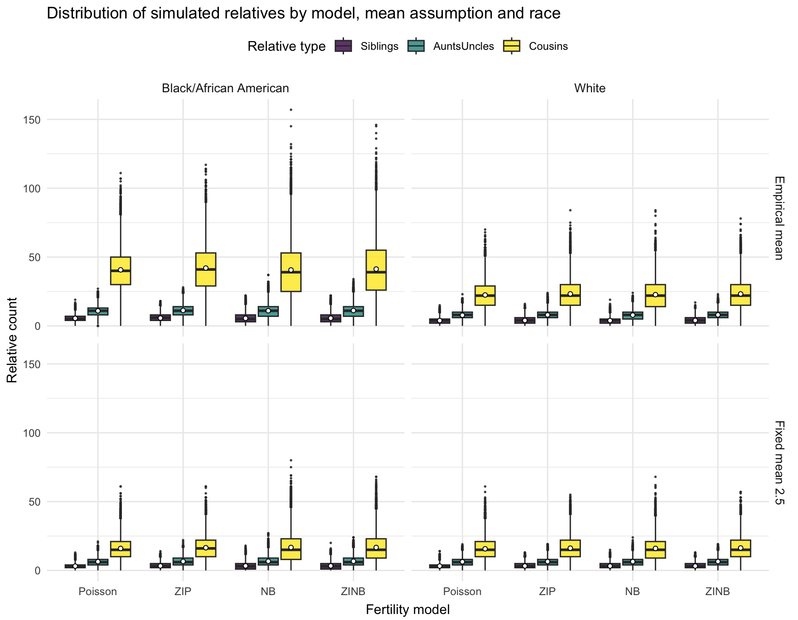
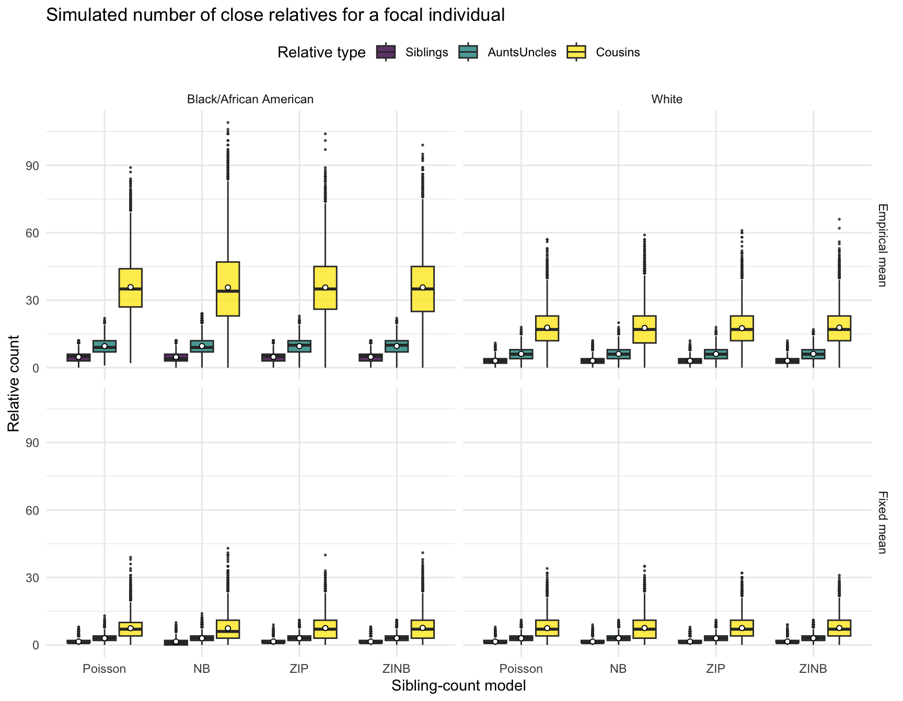
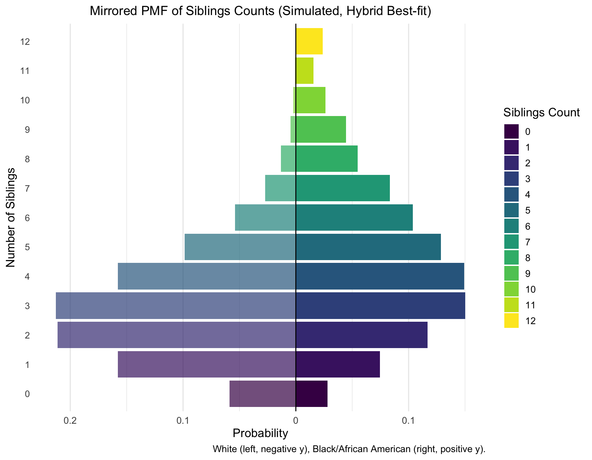
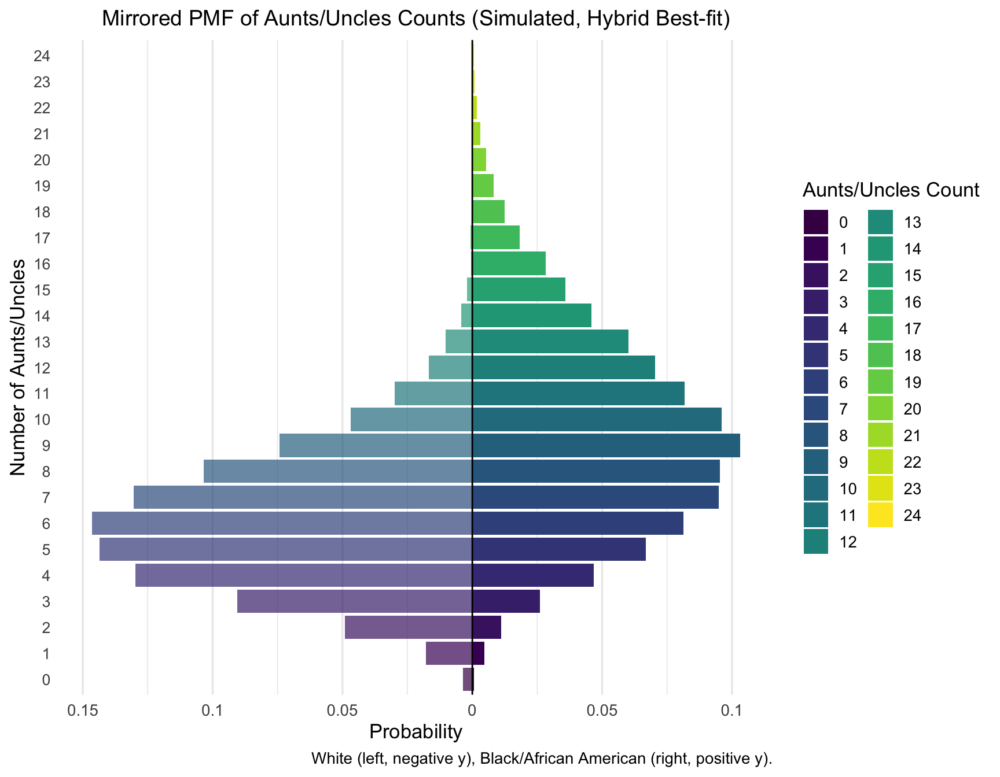
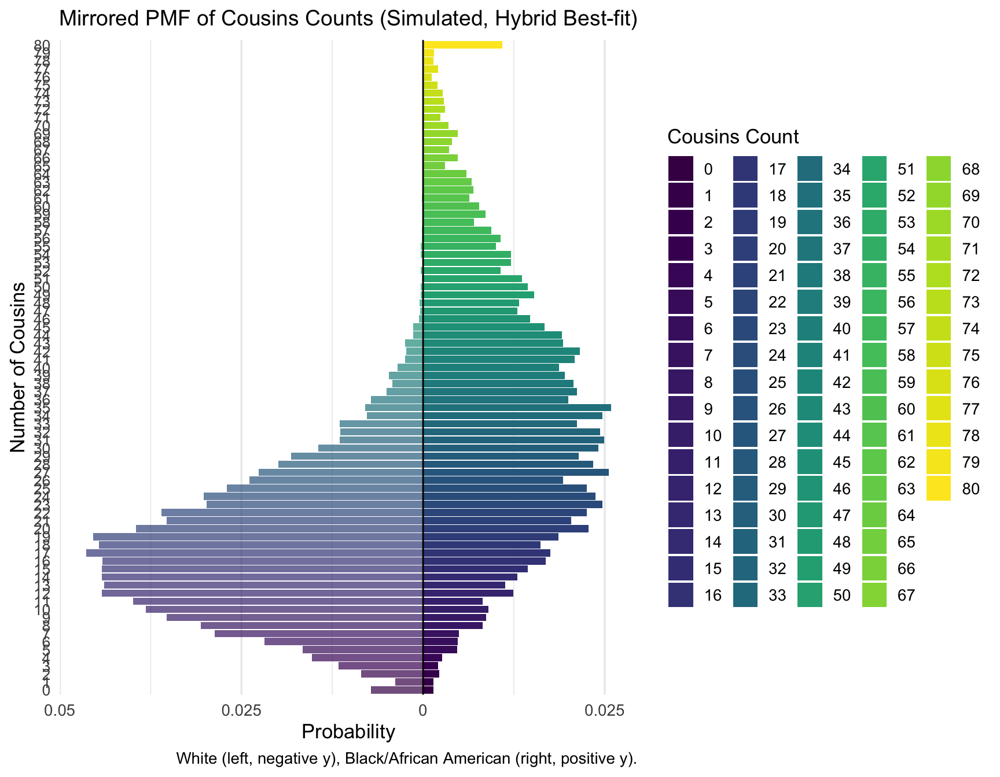
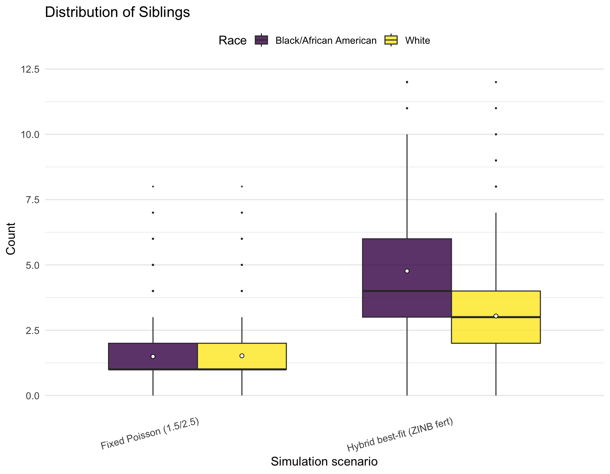
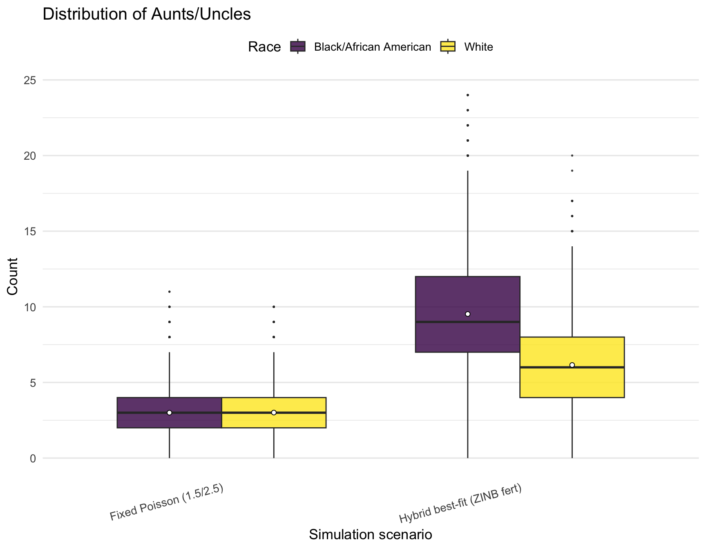
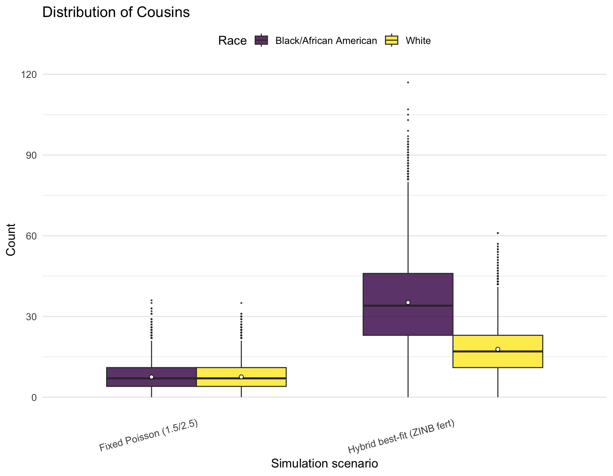
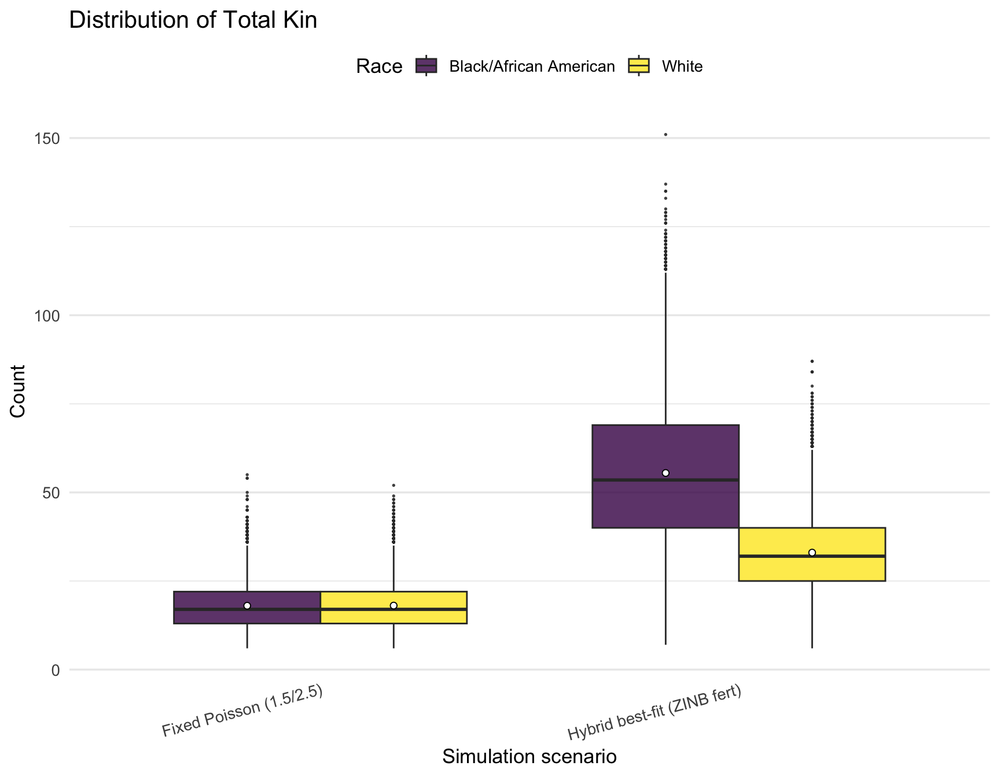

Last updated: 2025-06-18
Checks: 6 1
Knit directory: PODFRIDGE/
This reproducible R Markdown analysis was created with workflowr (version 1.7.1). The Checks tab describes the reproducibility checks that were applied when the results were created. The Past versions tab lists the development history.
The R Markdown is untracked by Git. To know which version of the R
Markdown file created these results, you’ll want to first commit it to
the Git repo. If you’re still working on the analysis, you can ignore
this warning. When you’re finished, you can run
wflow_publish to commit the R Markdown file and build the
HTML.
Great job! The global environment was empty. Objects defined in the global environment can affect the analysis in your R Markdown file in unknown ways. For reproduciblity it’s best to always run the code in an empty environment.
The command set.seed(20230302) was run prior to running
the code in the R Markdown file. Setting a seed ensures that any results
that rely on randomness, e.g. subsampling or permutations, are
reproducible.
Great job! Recording the operating system, R version, and package versions is critical for reproducibility.
Nice! There were no cached chunks for this analysis, so you can be confident that you successfully produced the results during this run.
Great job! Using relative paths to the files within your workflowr project makes it easier to run your code on other machines.
Great! You are using Git for version control. Tracking code development and connecting the code version to the results is critical for reproducibility.
The results in this page were generated with repository version d36349f. See the Past versions tab to see a history of the changes made to the R Markdown and HTML files.
Note that you need to be careful to ensure that all relevant files for
the analysis have been committed to Git prior to generating the results
(you can use wflow_publish or
wflow_git_commit). workflowr only checks the R Markdown
file, but you know if there are other scripts or data files that it
depends on. Below is the status of the Git repository when the results
were generated:
Ignored files:
Ignored: .DS_Store
Ignored: .Rhistory
Ignored: .Rproj.user/
Ignored: analysis/figure/
Ignored: data/.DS_Store
Ignored: data/sims/.DS_Store
Ignored: output/.DS_Store
Ignored: output/simulation_20240726-155743/.DS_Store
Ignored: output/simulation_20240726-162034_11228488/.DS_Store
Ignored: output/simulation_20240726-163235_11228791/.DS_Store
Untracked files:
Untracked: analysis/fertility_assumptions.Rmd
Untracked: data/fertility_params_1990_50-59.csv
Untracked: data/output_pmf_avuncular.csv
Untracked: data/output_pmf_avuncular_hybrid.csv
Untracked: data/output_pmf_avuncular_poisson.csv
Untracked: data/output_pmf_cousins.csv
Untracked: data/output_pmf_cousins_hybrid.csv
Untracked: data/output_pmf_cousins_poisson.csv
Untracked: data/output_pmf_sibling.csv
Untracked: data/output_pmf_sibling_hybrid.csv
Untracked: data/output_pmf_sibling_poisson.csv
Untracked: data/simulated_relative_counts_full.csv
Untracked: data/simulated_relative_counts_summary.csv
Unstaged changes:
Modified: analysis/index.Rmd
Modified: analysis/methods.Rmd
Modified: analysis/relative-distribution.Rmd
Note that any generated files, e.g. HTML, png, CSS, etc., are not included in this status report because it is ok for generated content to have uncommitted changes.
There are no past versions. Publish this analysis with
wflow_publish() to start tracking its development.
Here we extract the mean fertility (μ), dispersion/size (θ), and zero‑inflation probability (π₀) for U.S. women aged 50‑59 in the 1990 Census. Women aged 50–59 in the 1990 U.S. Census were born between 1931 and 1940. Assuming a typical childbearing age range of 25–45, their children would have been born between approximately 1956 and 1985. Therefore, the fertility distributions and relative counts estimated from this cohort primarily reflect the family-building behaviors and social contexts of the mid-1950s through the mid-1980s. We filter to Black/African American and White American groups as these are of interest to our paper.
library(dplyr)
library(tidyr)
library(readr)
library(MASS) ## glm.nb
library(pscl) ## zeroinfl
library(knitr) ## kable
##knitr::opts_knit$set(root.dir = ".")
knitr::opts_chunk$set(eval = TRUE, echo = TRUE, warning = FALSE, fig.width = 9, fig.height = 7)path <- file.path(".", "data")
prop_race_year <- file.path(path, "proportions_table_by_race_year.csv")
data_filter <- file.path(path, "data_filtered_recoded.csv")
## original script loads both; we only need mother_data for this step
mother_data <- read_csv(data_filter, show_col_types = FALSE)mother_data already contains:
YEAR – Census year (1960,1970,1980,1990)AGE – respondent ageRACE – recoded as “White” or “Black/African
American”chborn_num – completed fertility (children ever
born)cohort <- mother_data %>%
filter(YEAR == 1990,
AGE >= 50, AGE <= 59,
RACE %in% c("White", "Black/African American")) %>%
mutate(RACE = droplevels(factor(RACE)))
cohort %>% count(RACE, name = "n_women")# A tibble: 2 × 2
RACE n_women
<fct> <int>
1 Black/African American 10945
2 White 96079fit_four <- function(dat) {
## Poisson and NB use standard glm / glm.nb
pois <- glm(chborn_num ~ 1, family = poisson, data = dat)
nb <- glm.nb(chborn_num ~ 1, data = dat)
## Zero‑inflated models (pscl::zeroinfl)
zip <- zeroinfl(chborn_num ~ 1 | 1, data = dat, dist = "poisson")
zinb <- zeroinfl(chborn_num ~ 1 | 1, data = dat, dist = "negbin")
tibble(
Model = c("Poisson", "NB", "ZIP", "ZINB"),
mu = c(exp(coef(pois)[1]), ## log‑link → exp() gives mean
exp(coef(nb)[1]),
exp(zip$coefficients$count[1]), ## intercept of count part
exp(zinb$coefficients$count[1])),
size = c(Inf, ## dispersion θ; Inf = Poisson
nb$theta,
Inf,
zinb$theta),
pi0 = c(0, ## zero‑inflation prob.
0,
plogis(zip$coefficients$zero[1]),
plogis(zinb$coefficients$zero[1])),
AIC = c(AIC(pois), AIC(nb), AIC(zip), AIC(zinb))
)
}
param_tbl <- cohort %>%
group_by(RACE) %>%
group_modify(~ fit_four(.x)) %>%
ungroup()knitr::kable(param_tbl, digits = 3,
caption = "Fertility‑model parameter estimates for women aged50‑59 (1990 Census)")| RACE | Model | mu | size | pi0 | AIC |
|---|---|---|---|---|---|
| Black/African American | Poisson | 3.724 | Inf | 0.000 | 55107.97 |
| Black/African American | NB | 3.724 | 3.007 | 0.000 | 51184.00 |
| Black/African American | ZIP | 4.121 | Inf | 0.096 | 52841.82 |
| Black/African American | ZINB | 3.932 | 4.289 | 0.053 | 51024.46 |
| White | Poisson | 2.895 | Inf | 0.000 | 381107.37 |
| White | NB | 2.895 | 18.402 | 0.000 | 380052.99 |
| White | ZIP | 3.079 | Inf | 0.060 | 376840.14 |
| White | ZINB | 3.079 | 257628.938 | 0.060 | 376842.17 |
Table. Fertility-model parameter estimates for women aged 50–59 in the 1990 U.S. Census. Columns are: Model (distribution fitted: Poisson, Negative Binomial [NB], Zero-Inflated Poisson [ZIP], or Zero-Inflated Negative Binomial [ZINB]); μ (mean completed fertility, i.e., average number of children per woman); size (dispersion parameter, only meaningful for NB/ZINB models—set to Inf where not applicable); π₀ (probability of “excess” zeroes, i.e., extra childless women above model expectation, relevant only for ZIP/ZINB models); and AIC (Akaike Information Criterion for model comparison; lower values indicate better fit).
write_csv(param_tbl, "data/fertility_params_1990_50-59.csv")For women aged 50–59 in the 1990 Census, mean completed fertility (μ) was higher in Black/African American (μ ≈ 3.9, best-fit ZINB) than in White (μ ≈ 3.1, best-fit ZIP) populations. The best-fitting model for Black women was the Zero-Inflated Negative Binomial (ZINB), reflecting both significant overdispersion (θ ≈ 4.3) and a moderate excess of childless women (π₀ ≈ 0.05). For White women, the best fit was the Zero-Inflated Poisson (ZIP), with low overdispersion (θ ≫ 1) and similar zero-inflation (π₀ ≈ 0.06); however, the ZINB model provided a nearly identical fit (ΔAIC < 2), so we use ZINB parameters for both populations in all downstream simulations for consistency and comparability. This approach ensures that our estimates reflect both mean differences and any potential overdispersion or zero inflation in the data for both groups.
Here we evaluate how different fertility distribution assumptions
(Poisson, Negative Binomial [NB], Zero-Inflated Poisson [ZIP], and
Zero-Inflated Negative Binomial [ZINB]) influence estimates of
genetically detectable relatives. Using model parameters
(param_tbl) previously estimated for each race, we simulate
family structures and compare the expected number of siblings,
aunts/uncles, and cousins. Grandparents and parents are treated as
constants. We present both variable relative counts and totals that
include these constants, and provide formal statistical comparisons of
distributions. In addition, we compare results to a scenario where the
mean number of children is fixed at 2.5 for all distributions.
For each distribution, we calculate the overall (population-level) mean number of children per woman. For zero-inflated models (ZIP and ZINB), this is calculated as (1 – π₀) × μ, while for Poisson and NB models it is simply μ. This table summarizes the fitted values for each race and model:
param_tbl_total <- param_tbl %>%
mutate(overall_mean = (1 - pi0) * mu)
knitr::kable(param_tbl_total %>%
dplyr::select(RACE, Model, mu, pi0, overall_mean), digits = 3,
caption = "Overall mean fertility by model and race")| RACE | Model | mu | pi0 | overall_mean |
|---|---|---|---|---|
| Black/African American | Poisson | 3.724 | 0.000 | 3.724 |
| Black/African American | NB | 3.724 | 0.000 | 3.724 |
| Black/African American | ZIP | 4.121 | 0.096 | 3.724 |
| Black/African American | ZINB | 3.932 | 0.053 | 3.724 |
| White | Poisson | 2.895 | 0.000 | 2.895 |
| White | NB | 2.895 | 0.000 | 2.895 |
| White | ZIP | 3.079 | 0.060 | 2.895 |
| White | ZINB | 3.079 | 0.060 | 2.895 |
To estimate how family structure varies across models, we simulate pedigrees using each set of parameters. The function below draws the number of children for grandparents, parents, and aunts/uncles using the given distribution and parameters, then returns the resulting counts of siblings, aunts/uncles, and cousins for 10,000 simulated individuals per model/race.
simulate_relatives <- function(Model, mu, size, pi0,
n_sim = 10000,
max_kids = 12) {
draw_kids <- function(n) {
if (Model == "Poisson") pmin(rpois(n, mu), max_kids)
else if (Model == "NB") pmin(rnbinom(n, size, mu = mu), max_kids)
else if (Model == "ZIP") ifelse(runif(n) < pi0, 0L,
pmin(rpois(n, mu), max_kids))
else if (Model == "ZINB") ifelse(runif(n) < pi0, 0L,
pmin(rnbinom(n, size, mu = mu), max_kids))
else stop("Unknown model type")
}
grandparent_children <- matrix(draw_kids(4 * n_sim), nrow = n_sim, ncol = 4)
aunts_uncles <- rowSums(pmax(grandparent_children - 1, 0))
parent_children <- matrix(draw_kids(2 * n_sim), nrow = n_sim, ncol = 2)
siblings <- rowSums(pmax(parent_children - 1, 0))
# FIXED: use vapply, always returns integer vector
cousins <- vapply(aunts_uncles, function(n)
if (n == 0) 0L else as.integer(sum(draw_kids(n))),
integer(1)
)
tibble::tibble(
Siblings = siblings,
AuntsUncles = aunts_uncles,
Cousins = cousins
)
}We first simulate relatives using the best-fit parameters for each model and race, which reflect the true underlying distribution in the data.
library(purrr)
n_sim <- 10000
relative_counts_emp <- param_tbl %>%
mutate(Scenario = "Empirical mean",
sim = pmap(list(Model, mu, size, pi0),
~ simulate_relatives(..1, ..2, ..3, ..4, n_sim = n_sim))) %>%
tidyr::unnest(sim)To isolate the impact of model shape from differences in mean fertility, we also simulate each model with a fixed mean of 2.5 children. For ZIP and ZINB, μ is rescaled to ensure (1 – π₀) × μ = 2.5.
param_tbl_fixed <- param_tbl %>%
mutate(mu = ifelse(pi0 == 0, 2.5, 2.5 / (1 - pi0)))
relative_counts_fix <- param_tbl_fixed %>%
mutate(Scenario = "Fixed mean 2.5",
sim = pmap(list(Model, mu, size, pi0),
~ simulate_relatives(..1, ..2, ..3, ..4, n_sim = n_sim))) %>%
tidyr::unnest(sim)We then combine all simulated results and summarize the mean counts for each combination of scenario, model, and race.
relative_counts_both <- bind_rows(relative_counts_emp, relative_counts_fix)
summary_variable <- relative_counts_both %>%
group_by(Scenario, RACE, Model) %>%
summarise(across(c(Siblings, AuntsUncles, Cousins), mean), .groups = "drop")
knitr::kable(summary_variable, digits = 2,
caption = "Expected counts of variable relatives by scenario, model, and race")| Scenario | RACE | Model | Siblings | AuntsUncles | Cousins |
|---|---|---|---|---|---|
| Empirical mean | Black/African American | NB | 5.52 | 11.03 | 40.62 |
| Empirical mean | Black/African American | Poisson | 5.50 | 10.93 | 40.70 |
| Empirical mean | Black/African American | ZINB | 5.62 | 11.18 | 41.30 |
| Empirical mean | Black/African American | ZIP | 5.69 | 11.30 | 42.01 |
| Empirical mean | White | NB | 3.88 | 7.85 | 22.70 |
| Empirical mean | White | Poisson | 3.89 | 7.76 | 22.45 |
| Empirical mean | White | ZINB | 4.01 | 8.01 | 23.22 |
| Empirical mean | White | ZIP | 3.99 | 8.00 | 23.26 |
| Fixed mean 2.5 | Black/African American | NB | 3.33 | 6.68 | 16.69 |
| Fixed mean 2.5 | Black/African American | Poisson | 3.15 | 6.40 | 15.98 |
| Fixed mean 2.5 | Black/African American | ZINB | 3.32 | 6.68 | 16.68 |
| Fixed mean 2.5 | Black/African American | ZIP | 3.30 | 6.58 | 16.50 |
| Fixed mean 2.5 | White | NB | 3.20 | 6.42 | 16.00 |
| Fixed mean 2.5 | White | Poisson | 3.18 | 6.30 | 15.71 |
| Fixed mean 2.5 | White | ZINB | 3.23 | 6.49 | 16.30 |
| Fixed mean 2.5 | White | ZIP | 3.26 | 6.47 | 16.18 |
The table below includes the two parents and four grandparents per individual, added to the mean expected number of variable relatives.
summary_total <- summary_variable %>%
mutate(
Parents = 2,
Grandparents = 4,
Total_1st_2nd = Parents + Grandparents + Siblings + AuntsUncles + Cousins
) %>%
dplyr::select(Scenario, RACE, Model, Parents, Grandparents, Siblings, AuntsUncles, Cousins, Total_1st_2nd)
knitr::kable(summary_total, digits = 2,
caption = "Expected total counts including constant parents and grandparents")| Scenario | RACE | Model | Parents | Grandparents | Siblings | AuntsUncles | Cousins | Total_1st_2nd |
|---|---|---|---|---|---|---|---|---|
| Empirical mean | Black/African American | NB | 2 | 4 | 5.52 | 11.03 | 40.62 | 63.17 |
| Empirical mean | Black/African American | Poisson | 2 | 4 | 5.50 | 10.93 | 40.70 | 63.14 |
| Empirical mean | Black/African American | ZINB | 2 | 4 | 5.62 | 11.18 | 41.30 | 64.09 |
| Empirical mean | Black/African American | ZIP | 2 | 4 | 5.69 | 11.30 | 42.01 | 64.99 |
| Empirical mean | White | NB | 2 | 4 | 3.88 | 7.85 | 22.70 | 40.44 |
| Empirical mean | White | Poisson | 2 | 4 | 3.89 | 7.76 | 22.45 | 40.11 |
| Empirical mean | White | ZINB | 2 | 4 | 4.01 | 8.01 | 23.22 | 41.24 |
| Empirical mean | White | ZIP | 2 | 4 | 3.99 | 8.00 | 23.26 | 41.25 |
| Fixed mean 2.5 | Black/African American | NB | 2 | 4 | 3.33 | 6.68 | 16.69 | 32.70 |
| Fixed mean 2.5 | Black/African American | Poisson | 2 | 4 | 3.15 | 6.40 | 15.98 | 31.53 |
| Fixed mean 2.5 | Black/African American | ZINB | 2 | 4 | 3.32 | 6.68 | 16.68 | 32.68 |
| Fixed mean 2.5 | Black/African American | ZIP | 2 | 4 | 3.30 | 6.58 | 16.50 | 32.38 |
| Fixed mean 2.5 | White | NB | 2 | 4 | 3.20 | 6.42 | 16.00 | 31.63 |
| Fixed mean 2.5 | White | Poisson | 2 | 4 | 3.18 | 6.30 | 15.71 | 31.20 |
| Fixed mean 2.5 | White | ZINB | 2 | 4 | 3.23 | 6.49 | 16.30 | 32.03 |
| Fixed mean 2.5 | White | ZIP | 2 | 4 | 3.26 | 6.47 | 16.18 | 31.91 |
We visualize the full distribution of simulated relatives across models, mean scenarios, and races. Each box represents the distribution of simulated counts; means are shown as white dots.
library(ggplot2)
rel_long_all <- relative_counts_both %>%
tidyr::pivot_longer(c(Siblings, AuntsUncles, Cousins),
names_to = "Relative",
values_to = "Count") %>%
mutate(
Model = factor(Model, levels = c("Poisson", "ZIP", "NB", "ZINB")),
Relative = factor(Relative, levels = c("Siblings","AuntsUncles","Cousins")),
Scenario = factor(Scenario, levels = c("Empirical mean","Fixed mean 2.5")),
RACE = factor(RACE, levels = c("Black/African American","White"))
)
ggplot(rel_long_all,
aes(x = Model, y = Count, fill = Relative)) +
geom_boxplot(position = position_dodge(width = 0.8),
width = 0.7, alpha = .8, outlier.size = .3) +
stat_summary(fun = mean, geom = "point", shape = 21, size = 1.4,
aes(group = Relative),
position = position_dodge(width = 0.8),
colour = "black", fill = "white") +
facet_grid(Scenario ~ RACE) +
scale_fill_viridis_d(option = "D") +
labs(title = "Distribution of simulated relatives by model, mean assumption and race",
x = "Fertility model",
y = "Relative count",
fill = "Relative type") +
theme_minimal(base_size = 11) +
theme(legend.position = "top",
axis.title.x = element_text(vjust = -0.2),
strip.text = element_text(size = 10))
We formally test the contribution of model choice, mean specification, and race on the simulated number of relatives, using three-way ANOVA for each relative type. We also generate a compact-letter display (CLD) to indicate which groups are or are not statistically different after correction for multiple comparisons. In the summary plot, each box is labeled with its CLD group letter: boxes sharing a letter are not significantly different at the 0.05 level (Bonferroni-adjusted).
library(broom)
library(knitr)
relatives <- c("Siblings", "AuntsUncles", "Cousins")
for (rel in relatives) {
cat("\n\n### Model for", rel, "\n\n")
analysis_data <- rel_long_all %>%
mutate(
RACE = factor(RACE, levels = c("White", "Black/African American")),
Model = factor(Model, levels = c("Poisson", "ZIP", "NB", "ZINB")),
Scenario = factor(Scenario, levels = c("Fixed mean 2.5", "Empirical mean")),
Relative = factor(Relative, levels = c("Siblings", "AuntsUncles", "Cousins"))
) %>%
filter(Relative == rel)
lm_fit <- lm(Count ~ RACE * Model * Scenario, data = analysis_data)
lm_tidy <- broom::tidy(lm_fit, conf.int = TRUE)
print(knitr::kable(
lm_tidy,
digits = 3,
caption = paste("Regression coefficients for", rel,
"(reference: White, Poisson, Fixed mean 2.5)")
))
}| term | estimate | std.error | statistic | p.value | conf.low | conf.high |
|---|---|---|---|---|---|---|
| (Intercept) | 3.184 | 0.026 | 121.692 | 0.000 | 3.133 | 3.235 |
| RACEBlack/African American | -0.039 | 0.037 | -1.049 | 0.294 | -0.111 | 0.034 |
| ModelZIP | 0.079 | 0.037 | 2.130 | 0.033 | 0.006 | 0.151 |
| ModelNB | 0.017 | 0.037 | 0.468 | 0.640 | -0.055 | 0.090 |
| ModelZINB | 0.043 | 0.037 | 1.176 | 0.240 | -0.029 | 0.116 |
| ScenarioEmpirical mean | 0.706 | 0.037 | 19.078 | 0.000 | 0.633 | 0.778 |
| RACEBlack/African American:ModelZIP | 0.075 | 0.052 | 1.426 | 0.154 | -0.028 | 0.177 |
| RACEBlack/African American:ModelNB | 0.168 | 0.052 | 3.211 | 0.001 | 0.065 | 0.271 |
| RACEBlack/African American:ModelZINB | 0.127 | 0.052 | 2.437 | 0.015 | 0.025 | 0.230 |
| RACEBlack/African American:ScenarioEmpirical mean | 1.653 | 0.052 | 31.586 | 0.000 | 1.550 | 1.755 |
| ModelZIP:ScenarioEmpirical mean | 0.020 | 0.052 | 0.382 | 0.702 | -0.083 | 0.123 |
| ModelNB:ScenarioEmpirical mean | -0.023 | 0.052 | -0.436 | 0.663 | -0.125 | 0.080 |
| ModelZINB:ScenarioEmpirical mean | 0.076 | 0.052 | 1.460 | 0.144 | -0.026 | 0.179 |
| RACEBlack/African American:ModelZIP:ScenarioEmpirical mean | 0.008 | 0.074 | 0.115 | 0.909 | -0.137 | 0.154 |
| RACEBlack/African American:ModelNB:ScenarioEmpirical mean | -0.145 | 0.074 | -1.962 | 0.050 | -0.290 | 0.000 |
| RACEBlack/African American:ModelZINB:ScenarioEmpirical mean | -0.134 | 0.074 | -1.812 | 0.070 | -0.279 | 0.011 |
| term | estimate | std.error | statistic | p.value | conf.low | conf.high |
|---|---|---|---|---|---|---|
| (Intercept) | 6.301 | 0.037 | 170.397 | 0.000 | 6.229 | 6.374 |
| RACEBlack/African American | 0.097 | 0.052 | 1.860 | 0.063 | -0.005 | 0.200 |
| ModelZIP | 0.165 | 0.052 | 3.147 | 0.002 | 0.062 | 0.267 |
| ModelNB | 0.122 | 0.052 | 2.331 | 0.020 | 0.019 | 0.224 |
| ModelZINB | 0.192 | 0.052 | 3.681 | 0.000 | 0.090 | 0.295 |
| ScenarioEmpirical mean | 1.464 | 0.052 | 27.984 | 0.000 | 1.361 | 1.566 |
| RACEBlack/African American:ModelZIP | 0.019 | 0.074 | 0.254 | 0.799 | -0.126 | 0.164 |
| RACEBlack/African American:ModelNB | 0.164 | 0.074 | 2.221 | 0.026 | 0.019 | 0.309 |
| RACEBlack/African American:ModelZINB | 0.094 | 0.074 | 1.268 | 0.205 | -0.051 | 0.239 |
| RACEBlack/African American:ScenarioEmpirical mean | 3.071 | 0.074 | 41.523 | 0.000 | 2.926 | 3.216 |
| ModelZIP:ScenarioEmpirical mean | 0.075 | 0.074 | 1.009 | 0.313 | -0.070 | 0.220 |
| ModelNB:ScenarioEmpirical mean | -0.035 | 0.074 | -0.473 | 0.636 | -0.180 | 0.110 |
| ModelZINB:ScenarioEmpirical mean | 0.054 | 0.074 | 0.734 | 0.463 | -0.091 | 0.199 |
| RACEBlack/African American:ModelZIP:ScenarioEmpirical mean | 0.107 | 0.105 | 1.022 | 0.307 | -0.098 | 0.312 |
| RACEBlack/African American:ModelNB:ScenarioEmpirical mean | -0.159 | 0.105 | -1.516 | 0.129 | -0.364 | 0.046 |
| RACEBlack/African American:ModelZINB:ScenarioEmpirical mean | -0.099 | 0.105 | -0.942 | 0.346 | -0.304 | 0.107 |
| term | estimate | std.error | statistic | p.value | conf.low | conf.high |
|---|---|---|---|---|---|---|
| (Intercept) | 15.713 | 0.128 | 122.316 | 0.000 | 15.461 | 15.965 |
| RACEBlack/African American | 0.270 | 0.182 | 1.487 | 0.137 | -0.086 | 0.626 |
| ModelZIP | 0.467 | 0.182 | 2.570 | 0.010 | 0.111 | 0.823 |
| ModelNB | 0.291 | 0.182 | 1.601 | 0.109 | -0.065 | 0.647 |
| ModelZINB | 0.591 | 0.182 | 3.256 | 0.001 | 0.235 | 0.948 |
| ScenarioEmpirical mean | 6.739 | 0.182 | 37.092 | 0.000 | 6.383 | 7.095 |
| RACEBlack/African American:ModelZIP | 0.048 | 0.257 | 0.185 | 0.853 | -0.456 | 0.551 |
| RACEBlack/African American:ModelNB | 0.412 | 0.257 | 1.606 | 0.108 | -0.091 | 0.916 |
| RACEBlack/African American:ModelZINB | 0.107 | 0.257 | 0.415 | 0.678 | -0.397 | 0.610 |
| RACEBlack/African American:ScenarioEmpirical mean | 17.978 | 0.257 | 69.974 | 0.000 | 17.474 | 18.481 |
| ModelZIP:ScenarioEmpirical mean | 0.337 | 0.257 | 1.312 | 0.189 | -0.166 | 0.841 |
| ModelNB:ScenarioEmpirical mean | -0.037 | 0.257 | -0.145 | 0.885 | -0.541 | 0.466 |
| ModelZINB:ScenarioEmpirical mean | 0.174 | 0.257 | 0.677 | 0.498 | -0.330 | 0.677 |
| RACEBlack/African American:ModelZIP:ScenarioEmpirical mean | 0.456 | 0.363 | 1.256 | 0.209 | -0.256 | 1.169 |
| RACEBlack/African American:ModelNB:ScenarioEmpirical mean | -0.746 | 0.363 | -2.054 | 0.040 | -1.459 | -0.034 |
| RACEBlack/African American:ModelZINB:ScenarioEmpirical mean | -0.275 | 0.363 | -0.756 | 0.450 | -0.987 | 0.438 |
library(dplyr)
library(broom)
library(tidyr)
library(purrr)
relatives <- c("Siblings", "AuntsUncles", "Cousins")
models <- c("Poisson", "ZIP", "NB", "ZINB")
anova_per_model <- purrr::cross_df(list(Relative = relatives, Model = models)) %>%
rowwise() %>%
mutate(
anova = list({
data_fixed <- rel_long_all %>%
filter(Relative == Relative, Scenario == "Fixed mean 2.5", Model == Model) %>%
mutate(RACE = factor(RACE, levels = c("White", "Black/African American")))
if(nrow(data_fixed) < 2) return(tibble(Df = NA, F_value = NA, p_value = NA))
lm0 <- lm(Count ~ 1, data = data_fixed)
lm1 <- lm(Count ~ RACE, data = data_fixed)
atab <- as.data.frame(anova(lm0, lm1))
tibble(Df = atab$Df[2], F_value = atab$`F value`[2], p_value = atab$`Pr(>F)`[2])
})
) %>%
unnest(anova)
knitr::kable(anova_per_model, digits = 4, caption = "Test of Race effect within each model (Fixed mean = 2.5 only)")| Relative | Model | Df | p_value |
|---|---|---|---|
| Siblings | Poisson | 1 | 0 |
| AuntsUncles | Poisson | 1 | 0 |
| Cousins | Poisson | 1 | 0 |
| Siblings | ZIP | 1 | 0 |
| AuntsUncles | ZIP | 1 | 0 |
| Cousins | ZIP | 1 | 0 |
| Siblings | NB | 1 | 0 |
| AuntsUncles | NB | 1 | 0 |
| Cousins | NB | 1 | 0 |
| Siblings | ZINB | 1 | 0 |
| AuntsUncles | ZINB | 1 | 0 |
| Cousins | ZINB | 1 | 0 |
When mean fertility is held constant at 2.5 children for both populations, the expected number of siblings, aunts/uncles, and cousins is virtually identical for Black and White groups, regardless of model choice (Poisson, NB, ZIP, or ZINB). Although our fitted NB/ZINB/ZIP models allow for group-specific overdispersion and zero-inflation, these parameters had negligible practical effect on expected kin counts for the distributions observed in US Census data. We conclude that, in practice, mean fertility is the primary driver of group differences in simulated kinship structure for recent cohorts.
Perfect—let’s keep the language tight and consistent:
We now assess close-kin counts (siblings, aunts/uncles, cousins) directly from the perspective of the focal individual, fitting and simulating the distribution of siblings per person, and comparing the effect of distributional assumptions (Poisson, NB, ZIP, ZINB) and race, as before.
# Prepare individual-level sibling count
sibs_long <- cohort %>%
filter(chborn_num > 0) %>%
tidyr::uncount(chborn_num, .remove = FALSE) %>%
mutate(n_sib = chborn_num - 1)
fit_sib_models <- function(dat) {
pois <- glm(n_sib ~ 1, family = poisson, data = dat)
nb <- glm.nb(n_sib ~ 1, data = dat)
zip <- zeroinfl(n_sib ~ 1 | 1, data = dat, dist = "poisson")
zinb <- zeroinfl(n_sib ~ 1 | 1, data = dat, dist = "negbin")
tibble(
Model = c("Poisson", "NB", "ZIP", "ZINB"),
mu = c(exp(coef(pois)[1]),
exp(coef(nb)[1]),
exp(zip$coefficients$count[1]),
exp(zinb$coefficients$count[1])),
size = c(Inf, nb$theta, Inf, zinb$theta),
pi0 = c(0, 0, plogis(zip$coefficients$zero[1]), plogis(zinb$coefficients$zero[1])),
AIC = c(AIC(pois), AIC(nb), AIC(zip), AIC(zinb))
)
}
sib_param_tbl <- sibs_long %>%
group_by(RACE) %>%
group_modify(~ fit_sib_models(.x)) %>%
ungroup()
knitr::kable(sib_param_tbl, digits = 3, caption = "Model fits for sibling count distribution by race")| RACE | Model | mu | size | pi0 | AIC |
|---|---|---|---|---|---|
| Black/African American | Poisson | 4.803 | Inf | 0.000 | 203758.5 |
| Black/African American | NB | 4.803 | 6.474000e+00 | 0.000 | 197096.3 |
| Black/African American | ZIP | 4.930 | Inf | 0.026 | 201893.1 |
| Black/African American | ZINB | 4.930 | 2.100902e+09 | 0.026 | 201895.1 |
| White | Poisson | 3.053 | Inf | 0.000 | 1104146.8 |
| White | NB | 3.053 | 1.837100e+01 | 0.000 | 1100190.5 |
| White | ZIP | 3.053 | Inf | 0.000 | 1104149.3 |
| White | ZINB | 3.053 | 6.323171e+10 | 0.000 | 1104150.8 |
Table. For individual-level sibling counts, the negative binomial (NB) model provides the best fit for both populations, with substantially lower AIC than the Poisson, ZIP, or ZINB models. This indicates that sibship size is more variable than would be expected under a simple Poisson process, consistent with substantial overdispersion in family sizes, but there is little evidence for zero-inflation (excess of only children).
Because individuals from large families are more common in an individual-level sample, the average number of siblings per person is higher than the mean family size minus one (the “sibship size paradox”). This effect is important to account for in forensic or genetic risk models that simulate from the perspective of a random individual.
We estimate the expected number and full probability distributions of close genetic relatives (siblings, aunts/uncles, and cousins) for a focal individual. This is done across all fitted models (Poisson, NB, ZIP, ZINB), for both Black/African American and White groups, using both empirical mean and fixed mean scenarios. We then compare these focal-individual predictions to a hybrid “best-fit” model and a Poisson-fertility baseline.
simulate_focal_kin <- function(
sib_Model, sib_mu, sib_size, sib_pi0, # Sibling distribution params
fert_Model, fert_mu, fert_size, fert_pi0, # Fertility distribution params
n_sim = 10000, max_sib = 12, max_kids = 12
) {
# Helper: draw siblings under a distribution (always return integer)
draw_sibs <- function(nn) {
out <- if (sib_Model == "Poisson") rpois(nn, sib_mu)
else if (sib_Model == "NB") rnbinom(nn, sib_size, mu = sib_mu)
else if (sib_Model == "ZIP") ifelse(runif(nn) < sib_pi0, 0L, rpois(nn, sib_mu))
else if (sib_Model == "ZINB") ifelse(runif(nn) < sib_pi0, 0L, rnbinom(nn, sib_size, mu = sib_mu))
else stop("Unknown sib_model")
as.integer(pmin(out, max_sib))
}
draw_fert <- function(nn) {
out <- if (fert_Model == "Poisson") rpois(nn, fert_mu)
else if (fert_Model == "NB") rnbinom(nn, fert_size, mu = fert_mu)
else if (fert_Model == "ZIP") ifelse(runif(nn) < fert_pi0, 0L, rpois(nn, fert_mu))
else if (fert_Model == "ZINB") ifelse(runif(nn) < fert_pi0, 0L, rnbinom(nn, fert_size, mu = fert_mu))
else stop("Unknown fert_model")
as.integer(pmin(out, max_kids))
}
# 1. Siblings for the focal individual
siblings <- draw_sibs(n_sim)
# 2. Aunts & uncles (no subtraction needed)
aunts_maternal <- draw_sibs(n_sim) # mother’s siblings
aunts_paternal <- draw_sibs(n_sim) # father’s siblings
aunts_uncles <- aunts_maternal + aunts_paternal
# 3. Cousins: for each aunt/uncle, simulate their fertility and sum
cousins <- purrr::map_int(aunts_uncles, function(n_au) {
if (n_au == 0L) 0L else as.integer(sum(draw_fert(n_au)))
})
tibble::tibble(
Siblings = siblings,
AuntsUncles = aunts_uncles,
Cousins = cousins,
Parents = 2L,
Grandparents= 4L,
TotalKin = siblings + aunts_uncles + cousins + 2 + 4
)
}# Sibling (focal individual) parameter tables: empirical and fixed mean scenarios
sib_param_tbl_exp <- sib_param_tbl %>%
rename(sib_Model = Model, sib_mu = mu, sib_size = size, sib_pi0 = pi0, sib_AIC = AIC)
sib_param_tbl_fixed <- sib_param_tbl %>%
mutate(sib_mu = ifelse(pi0 == 0, 1.5, 1.5 / (1 - pi0))) %>%
rename(sib_Model = Model, sib_size = size, sib_pi0 = pi0, sib_AIC = AIC)
# Fertility (collateral relatives) parameter tables: empirical and fixed mean scenarios
fert_param_tbl_exp <- param_tbl %>%
rename(fert_Model = Model, fert_mu = mu, fert_size = size, fert_pi0 = pi0, fert_AIC = AIC)
fert_param_tbl_fixed <- param_tbl %>%
mutate(fert_mu = ifelse(pi0 == 0, 2.5, 2.5 / (1 - pi0))) %>%
rename(fert_Model = Model, fert_size = size, fert_pi0 = pi0, fert_AIC = AIC)# Parameter pairings for each scenario (all RACE x Model combinations)
param_pairs_emp <- expand_grid(
RACE = unique(sib_param_tbl_exp$RACE),
Model = unique(sib_param_tbl_exp$sib_Model)
) %>%
left_join(sib_param_tbl_exp, by = c("RACE", "Model" = "sib_Model")) %>%
left_join(fert_param_tbl_exp, by = c("RACE", "Model" = "fert_Model"))
param_pairs_fixed <- expand_grid(
RACE = unique(sib_param_tbl_fixed$RACE),
Model = unique(sib_param_tbl_fixed$sib_Model)
) %>%
left_join(sib_param_tbl_fixed, by = c("RACE", "Model" = "sib_Model")) %>%
left_join(fert_param_tbl_fixed, by = c("RACE", "Model" = "fert_Model"))
# Simulate kin counts for all parameter combinations (empirical and fixed mean)
focal_kin_sim_results_emp <- param_pairs_emp %>%
mutate(
sim = pmap(
list(Model, sib_mu, sib_size, sib_pi0, fert_mu, fert_size, fert_pi0),
~ simulate_focal_kin(
sib_Model = ..1, sib_mu = ..2, sib_size = ..3, sib_pi0 = ..4,
fert_Model = ..1, fert_mu = ..5, fert_size = ..6, fert_pi0 = ..7,
n_sim = 10000
)
)
)
focal_kin_sim_results_fixed <- param_pairs_fixed %>%
mutate(
sim = pmap(
list(Model, sib_mu, sib_size, sib_pi0, fert_mu, fert_size, fert_pi0),
~ simulate_focal_kin(
sib_Model = ..1, sib_mu = ..2, sib_size = ..3, sib_pi0 = ..4,
fert_Model = ..1, fert_mu = ..5, fert_size = ..6, fert_pi0 = ..7,
n_sim = 10000
)
)
)# Unnest and label scenario
focal_kin_counts_emp <- focal_kin_sim_results_emp %>% mutate(Scenario = "Empirical mean") %>% unnest(sim)
focal_kin_counts_fixed <- focal_kin_sim_results_fixed %>% mutate(Scenario = "Fixed mean") %>% unnest(sim)
# Combine for downstream comparison
focal_kin_counts_all <- bind_rows(focal_kin_counts_emp, focal_kin_counts_fixed)summary_focal_kin_all <- focal_kin_counts_all %>%
group_by(Scenario, RACE, Model) %>%
summarise(
mean_sibs = mean(Siblings),
mean_aunts_uncles = mean(AuntsUncles),
mean_cousins = mean(Cousins),
mean_total = mean(TotalKin),
.groups = "drop"
)
knitr::kable(summary_focal_kin_all, digits = 2,
caption = "Expected number of first-, second-, and third-degree relatives for a focal individual (simulated, by model, scenario, and race)")| Scenario | RACE | Model | mean_sibs | mean_aunts_uncles | mean_cousins | mean_total |
|---|---|---|---|---|---|---|
| Empirical mean | Black/African American | NB | 4.74 | 9.62 | 35.68 | 56.03 |
| Empirical mean | Black/African American | Poisson | 4.77 | 9.59 | 35.83 | 56.20 |
| Empirical mean | Black/African American | ZINB | 4.80 | 9.65 | 35.66 | 56.12 |
| Empirical mean | Black/African American | ZIP | 4.78 | 9.59 | 35.65 | 56.02 |
| Empirical mean | White | NB | 3.08 | 6.11 | 17.67 | 32.86 |
| Empirical mean | White | Poisson | 3.09 | 6.15 | 17.81 | 33.04 |
| Empirical mean | White | ZINB | 3.07 | 6.14 | 17.85 | 33.06 |
| Empirical mean | White | ZIP | 3.04 | 6.08 | 17.58 | 32.70 |
| Fixed mean | Black/African American | NB | 1.51 | 2.97 | 7.41 | 17.89 |
| Fixed mean | Black/African American | Poisson | 1.51 | 2.99 | 7.42 | 17.92 |
| Fixed mean | Black/African American | ZINB | 1.50 | 3.02 | 7.60 | 18.13 |
| Fixed mean | Black/African American | ZIP | 1.52 | 3.00 | 7.50 | 18.02 |
| Fixed mean | White | NB | 1.49 | 3.00 | 7.52 | 18.02 |
| Fixed mean | White | Poisson | 1.49 | 2.99 | 7.48 | 17.95 |
| Fixed mean | White | ZINB | 1.53 | 3.01 | 7.54 | 18.08 |
| Fixed mean | White | ZIP | 1.52 | 3.00 | 7.52 | 18.04 |
# Pivot for plotting
focal_kin_long <- focal_kin_counts_all %>%
pivot_longer(c(Siblings, AuntsUncles, Cousins),
names_to = "RelativeType", values_to = "Count") %>%
mutate(
Model = factor(Model, levels = c("Poisson", "NB", "ZIP", "ZINB")),
RelativeType = factor(RelativeType, levels = c("Siblings", "AuntsUncles", "Cousins")),
RACE = factor(RACE, levels = c("Black/African American", "White"))
)
# Plot
library(ggplot2)
ggplot(focal_kin_long,
aes(x = Model, y = Count, fill = RelativeType)) +
geom_boxplot(position = position_dodge(width = 0.8),
width = 0.7, alpha = .8, outlier.size = .3) +
stat_summary(fun = mean, geom = "point", shape = 21, size = 1.4,
aes(group = RelativeType),
position = position_dodge(width = 0.8),
colour = "black", fill = "white") +
facet_grid(Scenario ~ RACE) +
scale_fill_viridis_d(option = "D") +
labs(title = "Simulated number of close relatives for a focal individual",
x = "Sibling-count model",
y = "Relative count",
fill = "Relative type") +
theme_minimal(base_size = 11) +
theme(legend.position = "top")
library(broom)
library(knitr)
relatives <- c("Siblings", "AuntsUncles", "Cousins")
for (rel in relatives) {
cat("\n\n### Focal-individual model for", rel, "\n\n")
analysis_data <- focal_kin_long %>%
filter(RelativeType == rel) %>%
mutate(
RACE = factor(RACE, levels = c("White", "Black/African American")), # White as reference
Model = factor(Model, levels = c("Poisson", "NB", "ZIP", "ZINB")), # Poisson as reference
Scenario = factor(Scenario, levels = c("Fixed mean", "Empirical mean")) # Fixed mean as reference
)
lm_fit <- lm(Count ~ RACE * Model * Scenario, data = analysis_data)
lm_tidy <- broom::tidy(lm_fit, conf.int = TRUE)
print(knitr::kable(
lm_tidy,
digits = 3,
caption = paste(
"Regression coefficients for", rel,
"(focal-individual, reference: White, Poisson, Fixed mean\nSib mean=1.5, Fertility mean=2.5)"
)
))
}| term | estimate | std.error | statistic | p.value | conf.low | conf.high |
|---|---|---|---|---|---|---|
| (Intercept) | 1.491 | 0.017 | 85.741 | 0.000 | 1.457 | 1.525 |
| RACEBlack/African American | 0.020 | 0.025 | 0.825 | 0.409 | -0.028 | 0.069 |
| ModelNB | 0.002 | 0.025 | 0.069 | 0.945 | -0.047 | 0.050 |
| ModelZIP | 0.024 | 0.025 | 0.984 | 0.325 | -0.024 | 0.072 |
| ModelZINB | 0.038 | 0.025 | 1.537 | 0.124 | -0.010 | 0.086 |
| ScenarioEmpirical mean | 1.597 | 0.025 | 64.917 | 0.000 | 1.549 | 1.645 |
| RACEBlack/African American:ModelNB | -0.008 | 0.035 | -0.227 | 0.820 | -0.076 | 0.060 |
| RACEBlack/African American:ModelZIP | -0.020 | 0.035 | -0.561 | 0.575 | -0.088 | 0.049 |
| RACEBlack/African American:ModelZINB | -0.045 | 0.035 | -1.288 | 0.198 | -0.113 | 0.023 |
| RACEBlack/African American:ScenarioEmpirical mean | 1.661 | 0.035 | 47.757 | 0.000 | 1.593 | 1.730 |
| ModelNB:ScenarioEmpirical mean | -0.010 | 0.035 | -0.276 | 0.783 | -0.078 | 0.059 |
| ModelZIP:ScenarioEmpirical mean | -0.071 | 0.035 | -2.044 | 0.041 | -0.139 | -0.003 |
| ModelZINB:ScenarioEmpirical mean | -0.052 | 0.035 | -1.503 | 0.133 | -0.120 | 0.016 |
| RACEBlack/African American:ModelNB:ScenarioEmpirical mean | -0.014 | 0.049 | -0.293 | 0.770 | -0.111 | 0.082 |
| RACEBlack/African American:ModelZIP:ScenarioEmpirical mean | 0.076 | 0.049 | 1.541 | 0.123 | -0.021 | 0.172 |
| RACEBlack/African American:ModelZINB:ScenarioEmpirical mean | 0.090 | 0.049 | 1.827 | 0.068 | -0.007 | 0.186 |
| term | estimate | std.error | statistic | p.value | conf.low | conf.high |
|---|---|---|---|---|---|---|
| (Intercept) | 2.988 | 0.025 | 120.959 | 0.000 | 2.939 | 3.036 |
| RACEBlack/African American | 0.003 | 0.035 | 0.080 | 0.936 | -0.066 | 0.071 |
| ModelNB | 0.017 | 0.035 | 0.484 | 0.629 | -0.052 | 0.085 |
| ModelZIP | 0.017 | 0.035 | 0.490 | 0.624 | -0.051 | 0.086 |
| ModelZINB | 0.020 | 0.035 | 0.564 | 0.573 | -0.049 | 0.088 |
| ScenarioEmpirical mean | 3.158 | 0.035 | 90.401 | 0.000 | 3.089 | 3.226 |
| RACEBlack/African American:ModelNB | -0.037 | 0.049 | -0.741 | 0.459 | -0.133 | 0.060 |
| RACEBlack/African American:ModelZIP | -0.007 | 0.049 | -0.148 | 0.883 | -0.104 | 0.090 |
| RACEBlack/African American:ModelZINB | 0.015 | 0.049 | 0.294 | 0.769 | -0.082 | 0.111 |
| RACEBlack/African American:ScenarioEmpirical mean | 3.446 | 0.049 | 69.755 | 0.000 | 3.349 | 3.543 |
| ModelNB:ScenarioEmpirical mean | -0.050 | 0.049 | -1.012 | 0.311 | -0.147 | 0.047 |
| ModelZIP:ScenarioEmpirical mean | -0.081 | 0.049 | -1.632 | 0.103 | -0.177 | 0.016 |
| ModelZINB:ScenarioEmpirical mean | -0.027 | 0.049 | -0.545 | 0.586 | -0.124 | 0.070 |
| RACEBlack/African American:ModelNB:ScenarioEmpirical mean | 0.094 | 0.070 | 1.346 | 0.178 | -0.043 | 0.231 |
| RACEBlack/African American:ModelZIP:ScenarioEmpirical mean | 0.065 | 0.070 | 0.932 | 0.351 | -0.072 | 0.202 |
| RACEBlack/African American:ModelZINB:ScenarioEmpirical mean | 0.049 | 0.070 | 0.709 | 0.479 | -0.087 | 0.186 |
| term | estimate | std.error | statistic | p.value | conf.low | conf.high |
|---|---|---|---|---|---|---|
| (Intercept) | 7.476 | 0.094 | 79.779 | 0.000 | 7.292 | 7.659 |
| RACEBlack/African American | -0.059 | 0.133 | -0.446 | 0.656 | -0.319 | 0.201 |
| ModelNB | 0.047 | 0.133 | 0.355 | 0.723 | -0.213 | 0.307 |
| ModelZIP | 0.042 | 0.133 | 0.318 | 0.751 | -0.218 | 0.302 |
| ModelZINB | 0.069 | 0.133 | 0.519 | 0.604 | -0.191 | 0.329 |
| ScenarioEmpirical mean | 10.335 | 0.133 | 77.992 | 0.000 | 10.075 | 10.595 |
| RACEBlack/African American:ModelNB | -0.049 | 0.187 | -0.259 | 0.795 | -0.416 | 0.319 |
| RACEBlack/African American:ModelZIP | 0.041 | 0.187 | 0.219 | 0.826 | -0.326 | 0.408 |
| RACEBlack/African American:ModelZINB | 0.111 | 0.187 | 0.590 | 0.555 | -0.257 | 0.478 |
| RACEBlack/African American:ScenarioEmpirical mean | 18.082 | 0.187 | 96.487 | 0.000 | 17.715 | 18.450 |
| ModelNB:ScenarioEmpirical mean | -0.189 | 0.187 | -1.010 | 0.313 | -0.557 | 0.178 |
| ModelZIP:ScenarioEmpirical mean | -0.277 | 0.187 | -1.477 | 0.140 | -0.644 | 0.091 |
| ModelZINB:ScenarioEmpirical mean | -0.032 | 0.187 | -0.172 | 0.863 | -0.400 | 0.335 |
| RACEBlack/African American:ModelNB:ScenarioEmpirical mean | 0.032 | 0.265 | 0.121 | 0.904 | -0.487 | 0.551 |
| RACEBlack/African American:ModelZIP:ScenarioEmpirical mean | 0.012 | 0.265 | 0.046 | 0.963 | -0.507 | 0.532 |
| RACEBlack/African American:ModelZINB:ScenarioEmpirical mean | -0.317 | 0.265 | -1.198 | 0.231 | -0.837 | 0.202 |
Note: The reference group for all regressions is White, Poisson, Fixed mean (sibling mean = 1.5, fertility mean = 2.5). All coefficients are interpreted relative to this group. #### Hybrid Best-Fit Model and Poisson Fertility Baseline
# 1. Best sibling model per race (individual-level sibs)
sib_best <- sib_param_tbl %>%
group_by(RACE) %>% slice_min(AIC, n = 1) %>% ungroup()
# 2. Force ZINB for fertility model in both races (mother-level fertility)
fert_zinb <- param_tbl %>%
filter(Model == "ZINB") %>%
rename(
fert_Model = Model, fert_mu = mu,
fert_size = size, fert_pi0 = pi0,
fert_AIC = AIC
) %>%
# Now select using the NEW (renamed) column names
dplyr::select(RACE, fert_Model, fert_mu, fert_size, fert_pi0, fert_AIC)
# 3. Rename sibling columns and join to form hybrid parameter table
sib_best_renamed <- sib_best %>%
rename(
sib_Model = Model, sib_mu = mu,
sib_size = size, sib_pi0 = pi0,
sib_AIC = AIC
)
hybrid_param_zinb <- sib_best_renamed %>%
left_join(fert_zinb, by = "RACE")
knitr::kable(
hybrid_param_zinb,
digits = 3,
caption = "Hybrid best-fit parameter table for focal-individual kin simulation (ZINB fertility for both groups)"
)| RACE | sib_Model | sib_mu | sib_size | sib_pi0 | sib_AIC | fert_Model | fert_mu | fert_size | fert_pi0 | fert_AIC |
|---|---|---|---|---|---|---|---|---|---|---|
| Black/African American | NB | 4.803 | 6.474 | 0 | 197096.3 | ZINB | 3.932 | 4.289 | 0.053 | 51024.46 |
| White | NB | 3.053 | 18.371 | 0 | 1100190.5 | ZINB | 3.079 | 257628.938 | 0.060 | 376842.17 |
# 1. Fixed Poisson baseline: siblings = 1.5, fertility = 2.5, all else ignored
fixed_poisson_param <- tibble(
RACE = unique(hybrid_param_zinb$RACE),
sib_Model = "Poisson",
sib_mu = 1.5,
sib_size = Inf,
sib_pi0 = 0,
fert_Model = "Poisson",
fert_mu = 2.5,
fert_size = Inf,
fert_pi0 = 0
)
# 2. Simulate
set.seed(1)
hybrid_sim <- hybrid_param_zinb %>%
mutate(
Scenario = "Hybrid best-fit (ZINB fert)", # Add BEFORE sim
sim = pmap(
list(sib_Model, sib_mu, sib_size, sib_pi0,
fert_Model, fert_mu, fert_size, fert_pi0),
~ simulate_focal_kin(..1, ..2, ..3, ..4,
..5, ..6, ..7, ..8,
n_sim = 10000)
)
) %>%
unnest(sim)
fixed_poisson_sim <- fixed_poisson_param %>%
mutate(
Scenario = "Fixed Poisson (1.5/2.5)", # Add BEFORE sim
sim = pmap(
list(sib_Model, sib_mu, sib_size, sib_pi0,
fert_Model, fert_mu, fert_size, fert_pi0),
~ simulate_focal_kin(..1, ..2, ..3, ..4,
..5, ..6, ..7, ..8,
n_sim = 10000)
)
) %>%
unnest(sim)
# 3. Summarize & compare (don't create comparison_long here)
compare_means <- bind_rows(hybrid_sim, fixed_poisson_sim) %>%
group_by(Scenario, RACE) %>%
summarise(across(c(Siblings, AuntsUncles, Cousins, TotalKin), mean),
.groups = "drop") %>%
arrange(RACE, Scenario)
knitr::kable(compare_means, digits = 2,
caption = "Mean close-kin counts: hybrid best-fit (ZINB fertility both groups) vs. fixed Poisson baseline (siblings=1.5, fertility=2.5)"
)| Scenario | RACE | Siblings | AuntsUncles | Cousins | TotalKin |
|---|---|---|---|---|---|
| Fixed Poisson (1.5/2.5) | Black/African American | 1.49 | 3.00 | 7.52 | 18.01 |
| Hybrid best-fit (ZINB fert) | Black/African American | 4.77 | 9.52 | 35.19 | 55.48 |
| Fixed Poisson (1.5/2.5) | White | 1.52 | 3.01 | 7.53 | 18.06 |
| Hybrid best-fit (ZINB fert) | White | 3.04 | 6.15 | 17.81 | 33.01 |
# Function to get PMF for a variable, scenario, and race
get_pmf <- function(df, var) {
df %>%
count(RACE, !!sym(var), name = "n") %>%
group_by(RACE) %>%
mutate(p = n / sum(n)) %>%
ungroup()
}
# Hybrid scenario
sib_pmf_hybrid <- get_pmf(hybrid_sim, "Siblings")
aunts_pmf_hybrid <- get_pmf(hybrid_sim, "AuntsUncles")
cousins_pmf_hybrid <- get_pmf(hybrid_sim, "Cousins")
# Fixed Poisson baseline
sib_pmf_pois <- get_pmf(fixed_poisson_sim, "Siblings")
aunts_pmf_pois <- get_pmf(fixed_poisson_sim, "AuntsUncles")
cousins_pmf_pois <- get_pmf(fixed_poisson_sim, "Cousins")
# Write to CSV (useful for supplement)
write.csv(sib_pmf_hybrid, "data/output_pmf_sibling_hybrid.csv", row.names = FALSE)
write.csv(aunts_pmf_hybrid, "data/output_pmf_avuncular_hybrid.csv", row.names = FALSE)
write.csv(cousins_pmf_hybrid,"data/output_pmf_cousins_hybrid.csv", row.names = FALSE)
write.csv(sib_pmf_pois, "data/output_pmf_sibling_poisson.csv", row.names = FALSE)
write.csv(aunts_pmf_pois, "data/output_pmf_avuncular_poisson.csv", row.names = FALSE)
write.csv(cousins_pmf_pois, "data/output_pmf_cousins_poisson.csv", row.names = FALSE)print_pmf_table <- function(pmf, category, scenario, n = 12) {
pmf %>%
group_by(RACE) %>%
slice_head(n = n) %>%
ungroup() %>%
knitr::kable(
digits = 4,
caption = paste0("First ", n, " rows of PMF for ", category, " (", scenario, ")")
)
}
print_pmf_table(sib_pmf_hybrid, "Siblings", "Hybrid best-fit")| RACE | Siblings | n | p |
|---|---|---|---|
| Black/African American | 0 | 281 | 0.0281 |
| Black/African American | 1 | 746 | 0.0746 |
| Black/African American | 2 | 1168 | 0.1168 |
| Black/African American | 3 | 1503 | 0.1503 |
| Black/African American | 4 | 1494 | 0.1494 |
| Black/African American | 5 | 1285 | 0.1285 |
| Black/African American | 6 | 1037 | 0.1037 |
| Black/African American | 7 | 833 | 0.0833 |
| Black/African American | 8 | 549 | 0.0549 |
| Black/African American | 9 | 445 | 0.0445 |
| Black/African American | 10 | 264 | 0.0264 |
| Black/African American | 11 | 157 | 0.0157 |
| White | 0 | 589 | 0.0589 |
| White | 1 | 1579 | 0.1579 |
| White | 2 | 2113 | 0.2113 |
| White | 3 | 2128 | 0.2128 |
| White | 4 | 1579 | 0.1579 |
| White | 5 | 985 | 0.0985 |
| White | 6 | 539 | 0.0539 |
| White | 7 | 272 | 0.0272 |
| White | 8 | 131 | 0.0131 |
| White | 9 | 48 | 0.0048 |
| White | 10 | 24 | 0.0024 |
| White | 11 | 8 | 0.0008 |
print_pmf_table(sib_pmf_pois, "Siblings", "Fixed Poisson (1.5/2.5)")| RACE | Siblings | n | p |
|---|---|---|---|
| Black/African American | 0 | 2203 | 0.2203 |
| Black/African American | 1 | 3404 | 0.3404 |
| Black/African American | 2 | 2489 | 0.2489 |
| Black/African American | 3 | 1281 | 0.1281 |
| Black/African American | 4 | 444 | 0.0444 |
| Black/African American | 5 | 142 | 0.0142 |
| Black/African American | 6 | 26 | 0.0026 |
| Black/African American | 7 | 10 | 0.0010 |
| Black/African American | 8 | 1 | 0.0001 |
| White | 0 | 2118 | 0.2118 |
| White | 1 | 3419 | 0.3419 |
| White | 2 | 2484 | 0.2484 |
| White | 3 | 1326 | 0.1326 |
| White | 4 | 487 | 0.0487 |
| White | 5 | 119 | 0.0119 |
| White | 6 | 38 | 0.0038 |
| White | 7 | 8 | 0.0008 |
| White | 8 | 1 | 0.0001 |
print_pmf_table(aunts_pmf_hybrid, "Aunts/Uncles", "Hybrid best-fit")| RACE | AuntsUncles | n | p |
|---|---|---|---|
| Black/African American | 0 | 7 | 0.0007 |
| Black/African American | 1 | 46 | 0.0046 |
| Black/African American | 2 | 112 | 0.0112 |
| Black/African American | 3 | 260 | 0.0260 |
| Black/African American | 4 | 468 | 0.0468 |
| Black/African American | 5 | 669 | 0.0669 |
| Black/African American | 6 | 814 | 0.0814 |
| Black/African American | 7 | 950 | 0.0950 |
| Black/African American | 8 | 954 | 0.0954 |
| Black/African American | 9 | 1032 | 0.1032 |
| Black/African American | 10 | 961 | 0.0961 |
| Black/African American | 11 | 817 | 0.0817 |
| White | 0 | 36 | 0.0036 |
| White | 1 | 179 | 0.0179 |
| White | 2 | 490 | 0.0490 |
| White | 3 | 905 | 0.0905 |
| White | 4 | 1297 | 0.1297 |
| White | 5 | 1436 | 0.1436 |
| White | 6 | 1464 | 0.1464 |
| White | 7 | 1303 | 0.1303 |
| White | 8 | 1035 | 0.1035 |
| White | 9 | 743 | 0.0743 |
| White | 10 | 469 | 0.0469 |
| White | 11 | 298 | 0.0298 |
print_pmf_table(aunts_pmf_pois, "Aunts/Uncles", "Fixed Poisson (1.5/2.5)")| RACE | AuntsUncles | n | p |
|---|---|---|---|
| Black/African American | 0 | 527 | 0.0527 |
| Black/African American | 1 | 1428 | 0.1428 |
| Black/African American | 2 | 2279 | 0.2279 |
| Black/African American | 3 | 2228 | 0.2228 |
| Black/African American | 4 | 1675 | 0.1675 |
| Black/African American | 5 | 1024 | 0.1024 |
| Black/African American | 6 | 509 | 0.0509 |
| Black/African American | 7 | 228 | 0.0228 |
| Black/African American | 8 | 66 | 0.0066 |
| Black/African American | 9 | 21 | 0.0021 |
| Black/African American | 10 | 13 | 0.0013 |
| Black/African American | 11 | 2 | 0.0002 |
| White | 0 | 466 | 0.0466 |
| White | 1 | 1511 | 0.1511 |
| White | 2 | 2275 | 0.2275 |
| White | 3 | 2199 | 0.2199 |
| White | 4 | 1676 | 0.1676 |
| White | 5 | 1021 | 0.1021 |
| White | 6 | 512 | 0.0512 |
| White | 7 | 210 | 0.0210 |
| White | 8 | 100 | 0.0100 |
| White | 9 | 19 | 0.0019 |
| White | 10 | 11 | 0.0011 |
print_pmf_table(cousins_pmf_hybrid, "Cousins", "Hybrid best-fit")| RACE | Cousins | n | p |
|---|---|---|---|
| Black/African American | 0 | 14 | 0.0014 |
| Black/African American | 1 | 14 | 0.0014 |
| Black/African American | 2 | 22 | 0.0022 |
| Black/African American | 3 | 21 | 0.0021 |
| Black/African American | 4 | 26 | 0.0026 |
| Black/African American | 5 | 47 | 0.0047 |
| Black/African American | 6 | 48 | 0.0048 |
| Black/African American | 7 | 49 | 0.0049 |
| Black/African American | 8 | 82 | 0.0082 |
| Black/African American | 9 | 87 | 0.0087 |
| Black/African American | 10 | 90 | 0.0090 |
| Black/African American | 11 | 82 | 0.0082 |
| White | 0 | 72 | 0.0072 |
| White | 1 | 38 | 0.0038 |
| White | 2 | 85 | 0.0085 |
| White | 3 | 116 | 0.0116 |
| White | 4 | 153 | 0.0153 |
| White | 5 | 166 | 0.0166 |
| White | 6 | 218 | 0.0218 |
| White | 7 | 287 | 0.0287 |
| White | 8 | 306 | 0.0306 |
| White | 9 | 353 | 0.0353 |
| White | 10 | 382 | 0.0382 |
| White | 11 | 399 | 0.0399 |
print_pmf_table(cousins_pmf_pois, "Cousins", "Fixed Poisson (1.5/2.5)")| RACE | Cousins | n | p |
|---|---|---|---|
| Black/African American | 0 | 669 | 0.0669 |
| Black/African American | 1 | 384 | 0.0384 |
| Black/African American | 2 | 579 | 0.0579 |
| Black/African American | 3 | 716 | 0.0716 |
| Black/African American | 4 | 789 | 0.0789 |
| Black/African American | 5 | 798 | 0.0798 |
| Black/African American | 6 | 818 | 0.0818 |
| Black/African American | 7 | 789 | 0.0789 |
| Black/African American | 8 | 737 | 0.0737 |
| Black/African American | 9 | 642 | 0.0642 |
| Black/African American | 10 | 512 | 0.0512 |
| Black/African American | 11 | 498 | 0.0498 |
| White | 0 | 615 | 0.0615 |
| White | 1 | 365 | 0.0365 |
| White | 2 | 590 | 0.0590 |
| White | 3 | 734 | 0.0734 |
| White | 4 | 869 | 0.0869 |
| White | 5 | 826 | 0.0826 |
| White | 6 | 741 | 0.0741 |
| White | 7 | 821 | 0.0821 |
| White | 8 | 668 | 0.0668 |
| White | 9 | 622 | 0.0622 |
| White | 10 | 628 | 0.0628 |
| White | 11 | 478 | 0.0478 |
library(ggplot2)
library(viridisLite)
plot_pmf_mirror <- function(pmf_df, count_var = "Siblings", category_label = "Siblings", cap = NULL) {
cats <- sort(unique(pmf_df[[count_var]]))
if (!is.null(cap)) {
pmf_df[[count_var]] <- ifelse(pmf_df[[count_var]] > cap, cap, pmf_df[[count_var]])
cats <- sort(unique(pmf_df[[count_var]]))
}
n_cat <- length(cats)
color_palette <- viridis(n_cat, option = "D")
df <- pmf_df %>%
mutate(y = ifelse(RACE == "White", -p, p),
count_cat = factor(!!rlang::sym(count_var), levels = cats))
ggplot(df, aes(x = count_cat, y = y, fill = count_cat, alpha = RACE)) +
geom_col() +
geom_hline(yintercept = 0, color = "black", size = 0.5) +
coord_flip() +
scale_y_continuous(labels = function(x) abs(x)) +
scale_fill_manual(values = color_palette, name = paste(category_label, "Count")) +
scale_alpha_manual(values = c("White" = 0.7, "Black/African American" = 1), guide = "none") +
labs(
title = paste0("Mirrored PMF of ", category_label, " Counts (Simulated, Hybrid Best-fit)"),
x = paste("Number of", category_label),
y = "Probability",
caption = "White (left, negative y), Black/African American (right, positive y)."
) +
theme_minimal(base_size = 13) +
theme(
plot.title = element_text(size = 14, hjust = 0.5),
axis.text.y = element_text(size = 10),
legend.position = "right",
panel.grid.major.y = element_blank(),
panel.grid.minor.y = element_blank()
)
}plot_pmf_mirror(sib_pmf_hybrid, count_var = "Siblings", category_label = "Siblings", cap = 12)
plot_pmf_mirror(aunts_pmf_hybrid, count_var = "AuntsUncles", category_label = "Aunts/Uncles", cap = 32)
plot_pmf_mirror(cousins_pmf_hybrid, count_var = "Cousins", category_label = "Cousins", cap = 80)
# Combine hybrid and Poisson baseline sims
compare_means <- bind_rows(hybrid_sim, fixed_poisson_sim) %>%
group_by(Scenario, RACE) %>%
summarise(
mean_sibs = mean(Siblings),
mean_aunts_uncles = mean(AuntsUncles),
mean_cousins = mean(Cousins),
mean_total = mean(TotalKin),
.groups = "drop"
)
knitr::kable(compare_means, digits = 2,
caption = "Mean close-kin counts: hybrid best-fit vs. fixed Poisson baseline (siblings=1.5, fertility=2.5)"
)| Scenario | RACE | mean_sibs | mean_aunts_uncles | mean_cousins | mean_total |
|---|---|---|---|---|---|
| Fixed Poisson (1.5/2.5) | Black/African American | 1.49 | 3.00 | 7.52 | 18.01 |
| Fixed Poisson (1.5/2.5) | White | 1.52 | 3.01 | 7.53 | 18.06 |
| Hybrid best-fit (ZINB fert) | Black/African American | 4.77 | 9.52 | 35.19 | 55.48 |
| Hybrid best-fit (ZINB fert) | White | 3.04 | 6.15 | 17.81 | 33.01 |
summarize_kin <- function(df) {
df %>%
tidyr::pivot_longer(
c(Siblings, AuntsUncles, Cousins, TotalKin),
names_to = "Relative",
values_to = "Count"
) %>%
group_by(RACE, Relative) %>%
summarise(
min = min(Count),
q1 = quantile(Count, 0.25),
mean = mean(Count),
median = median(Count),
q3 = quantile(Count, 0.75),
max = max(Count),
.groups = "drop"
)
}hybrid_summary <- summarize_kin(hybrid_sim) %>%
rename_with(~ paste0("hybrid_", .), c("min","q1","mean","median","q3","max"))
poisson_summary <- summarize_kin(fixed_poisson_sim) %>%
rename_with(~ paste0("poisson_", .), c("min","q1","mean","median","q3","max"))library(dplyr)
side_by_side <- hybrid_summary %>%
left_join(poisson_summary, by = c("RACE", "Relative"))
knitr::kable(
side_by_side,
digits = 2,
caption = "Summary statistics for simulated kin counts: Hybrid (NB/ZINB) vs. Fixed Poisson baseline"
)| RACE | Relative | hybrid_min | hybrid_q1 | hybrid_mean | hybrid_median | hybrid_q3 | hybrid_max | poisson_min | poisson_q1 | poisson_mean | poisson_median | poisson_q3 | poisson_max |
|---|---|---|---|---|---|---|---|---|---|---|---|---|---|
| Black/African American | AuntsUncles | 0 | 7 | 9.52 | 9.0 | 12 | 24 | 0 | 2 | 3.00 | 3 | 4 | 11 |
| Black/African American | Cousins | 0 | 23 | 35.19 | 34.0 | 46 | 117 | 0 | 4 | 7.52 | 7 | 11 | 36 |
| Black/African American | Siblings | 0 | 3 | 4.77 | 4.0 | 6 | 12 | 0 | 1 | 1.49 | 1 | 2 | 8 |
| Black/African American | TotalKin | 7 | 40 | 55.48 | 53.5 | 69 | 151 | 6 | 13 | 18.01 | 17 | 22 | 55 |
| White | AuntsUncles | 0 | 4 | 6.15 | 6.0 | 8 | 20 | 0 | 2 | 3.01 | 3 | 4 | 10 |
| White | Cousins | 0 | 11 | 17.81 | 17.0 | 23 | 61 | 0 | 4 | 7.53 | 7 | 11 | 35 |
| White | Siblings | 0 | 2 | 3.04 | 3.0 | 4 | 12 | 0 | 1 | 1.52 | 1 | 2 | 8 |
| White | TotalKin | 6 | 25 | 33.01 | 32.0 | 40 | 87 | 6 | 13 | 18.06 | 17 | 22 | 52 |
library(ggplot2)
# Create comparison_long for plotting (check if Scenario exists first)
comparison_long <- bind_rows(hybrid_sim, fixed_poisson_sim) %>%
tidyr::pivot_longer(
cols = c(Siblings, AuntsUncles, Cousins, TotalKin),
names_to = "RelativeType",
values_to = "Count"
) %>%
mutate(
Scenario = factor(Scenario, levels = c("Fixed Poisson (1.5/2.5)", "Hybrid best-fit (ZINB fert)")),
RelativeType = factor(RelativeType, levels = c("Siblings", "AuntsUncles", "Cousins", "TotalKin"),
labels = c("Siblings", "Aunts/Uncles", "Cousins", "Total Kin"))
)
# Function to plot each relative type separately (with free y-axis)
plot_kin_box <- function(rel_type) {
ggplot(comparison_long %>% filter(RelativeType == rel_type),
aes(x = Scenario, y = Count, fill = RACE)) +
geom_boxplot(outlier.size = .3, width = 0.7, alpha = 0.8, position = position_dodge(width = 0.7)) +
stat_summary(
fun = mean, geom = "point", shape = 21, size = 1.7,
aes(group = RACE), color = "black", fill = "white",
position = position_dodge(width = 0.7)
) +
scale_fill_viridis_d(option = "D") +
labs(
title = paste("Distribution of", rel_type),
x = "Simulation scenario",
y = "Count",
fill = "Race"
) +
theme_minimal(base_size = 13) +
theme(
legend.position = "top",
panel.grid.major.x = element_blank(),
strip.text = element_text(size = 12),
axis.text.x = element_text(angle = 15, vjust = 1, hjust = 1)
)
}
# Now, print all four plots (one for each relative type)
plot_kin_box("Siblings")
plot_kin_box("Aunts/Uncles")
plot_kin_box("Cousins")
plot_kin_box("Total Kin")
# Make sure Scenario is present and named correctly
names(hybrid_sim) [1] "RACE" "sib_Model" "sib_mu" "sib_size" "sib_pi0"
[6] "sib_AIC" "fert_Model" "fert_mu" "fert_size" "fert_pi0"
[11] "fert_AIC" "Scenario" "Siblings" "AuntsUncles" "Cousins"
[16] "Parents" "Grandparents" "TotalKin" names(fixed_poisson_sim) [1] "RACE" "sib_Model" "sib_mu" "sib_size" "sib_pi0"
[6] "fert_Model" "fert_mu" "fert_size" "fert_pi0" "Scenario"
[11] "Siblings" "AuntsUncles" "Cousins" "Parents" "Grandparents"
[16] "TotalKin" # Filter for just TotalKin before running the regression
comparison_total <- bind_rows(
hybrid_sim %>% mutate(Scenario = "Hybrid best-fit (ZINB fert)"),
fixed_poisson_sim %>% mutate(Scenario = "Fixed Poisson (1.5/2.5)")
) %>%
mutate(
Scenario = factor(Scenario, levels = c("Fixed Poisson (1.5/2.5)", "Hybrid best-fit (ZINB fert)")),
RACE = factor(RACE, levels = c("White", "Black/African American"))
)
# Now run the regression on TotalKin
lm_hybrid_vs_pois <- lm(TotalKin ~ Scenario * RACE, data = comparison_total)
summary(lm_hybrid_vs_pois)
Call:
lm(formula = TotalKin ~ Scenario * RACE, data = comparison_total)
Residuals:
Min 1Q Median 3Q Max
-48.479 -7.011 -1.011 5.989 95.521
Coefficients:
Estimate
(Intercept) 18.0622
ScenarioHybrid best-fit (ZINB fert) 14.9490
RACEBlack/African American -0.0507
ScenarioHybrid best-fit (ZINB fert):RACEBlack/African American 22.5188
Std. Error
(Intercept) 0.1268
ScenarioHybrid best-fit (ZINB fert) 0.1794
RACEBlack/African American 0.1794
ScenarioHybrid best-fit (ZINB fert):RACEBlack/African American 0.2537
t value Pr(>|t|)
(Intercept) 142.415 <2e-16
ScenarioHybrid best-fit (ZINB fert) 83.345 <2e-16
RACEBlack/African American -0.283 0.777
ScenarioHybrid best-fit (ZINB fert):RACEBlack/African American 88.777 <2e-16
(Intercept) ***
ScenarioHybrid best-fit (ZINB fert) ***
RACEBlack/African American
ScenarioHybrid best-fit (ZINB fert):RACEBlack/African American ***
---
Signif. codes: 0 '***' 0.001 '**' 0.01 '*' 0.05 '.' 0.1 ' ' 1
Residual standard error: 12.68 on 39996 degrees of freedom
Multiple R-squared: 0.5935, Adjusted R-squared: 0.5935
F-statistic: 1.946e+04 on 3 and 39996 DF, p-value: < 2.2e-16knitr::kable(broom::tidy(lm_hybrid_vs_pois), digits = 3,
caption = "Regression coefficients: effect of simulation scenario (Hybrid vs Poisson) on total close relatives")| term | estimate | std.error | statistic | p.value |
|---|---|---|---|---|
| (Intercept) | 18.062 | 0.127 | 142.415 | 0.000 |
| ScenarioHybrid best-fit (ZINB fert) | 14.949 | 0.179 | 83.345 | 0.000 |
| RACEBlack/African American | -0.051 | 0.179 | -0.283 | 0.777 |
| ScenarioHybrid best-fit (ZINB fert):RACEBlack/African American | 22.519 | 0.254 | 88.777 | 0.000 |
sessionInfo()R version 4.5.0 (2025-04-11)
Platform: aarch64-apple-darwin20
Running under: macOS Sequoia 15.5
Matrix products: default
BLAS: /Library/Frameworks/R.framework/Versions/4.5-arm64/Resources/lib/libRblas.0.dylib
LAPACK: /Library/Frameworks/R.framework/Versions/4.5-arm64/Resources/lib/libRlapack.dylib; LAPACK version 3.12.1
locale:
[1] en_US.UTF-8/en_US.UTF-8/en_US.UTF-8/C/en_US.UTF-8/en_US.UTF-8
time zone: America/Detroit
tzcode source: internal
attached base packages:
[1] stats graphics grDevices utils datasets methods base
other attached packages:
[1] viridisLite_0.4.2 broom_1.0.8 ggplot2_3.5.2 purrr_1.0.4
[5] knitr_1.50 pscl_1.5.9 MASS_7.3-65 readr_2.1.5
[9] tidyr_1.3.1 dplyr_1.1.4 workflowr_1.7.1
loaded via a namespace (and not attached):
[1] sass_0.4.10 utf8_1.2.5 generics_0.1.4 stringi_1.8.7
[5] hms_1.1.3 digest_0.6.37 magrittr_2.0.3 RColorBrewer_1.1-3
[9] grid_4.5.0 evaluate_1.0.3 fastmap_1.2.0 rprojroot_2.0.4
[13] jsonlite_2.0.0 processx_3.8.6 whisker_0.4.1 backports_1.5.0
[17] ps_1.9.1 promises_1.3.3 httr_1.4.7 scales_1.4.0
[21] jquerylib_0.1.4 cli_3.6.5 rlang_1.1.6 crayon_1.5.3
[25] bit64_4.6.0-1 withr_3.0.2 cachem_1.1.0 yaml_2.3.10
[29] tools_4.5.0 parallel_4.5.0 tzdb_0.5.0 httpuv_1.6.16
[33] vctrs_0.6.5 R6_2.6.1 lifecycle_1.0.4 git2r_0.36.2
[37] stringr_1.5.1 fs_1.6.6 bit_4.6.0 vroom_1.6.5
[41] pkgconfig_2.0.3 callr_3.7.6 gtable_0.3.6 pillar_1.10.2
[45] bslib_0.9.0 later_1.4.2 glue_1.8.0 Rcpp_1.0.14
[49] xfun_0.52 tibble_3.3.0 tidyselect_1.2.1 dichromat_2.0-0.1
[53] rstudioapi_0.17.1 farver_2.1.2 htmltools_0.5.8.1 labeling_0.4.3
[57] rmarkdown_2.29 compiler_4.5.0 getPass_0.2-4